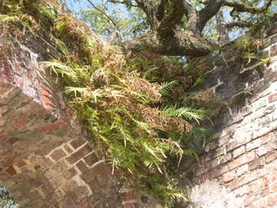

Previous || Next || Return to Mystery Plants || USC Herbarium
This Week's Mystery Plant | Dr. John B. Nelson Curator, USC Herbarium |
|
Here's a very curious fern that is worth a thought or two. It's a fern that is native to China, but one that has been grown widely as a cultivated plant around the world. It tends to escape fairly easily in the tropics and warmer parts of the world, and is becoming something of a weed in several places. Once again, we have a good example of a plant that has been unintentionally "released" from its home range, and is now unlikely to ever go back inside its cage. In the southeastern US, it occurs regularly outdoors and outside cultivation from Louisiana through all of Florida, and up as far north as coastal South Carolina. Visitors to Charleston often see it growing in cracks in concrete along sidewalks or in mortar between bricks. In fact, it is most likely to be found in nature on substrates such as limestone, and mortar fits that bill very well. It's a beautiful fern, forming a series of sword-shaped, dark green leaf divisions on each frond. Upon close inspection of the leaf edges, you would probably see a line of many thousands of tiny, brownish or tan, spore-producing structures called sporangia. Spores released may drift around in the air for some time, and those settling on suitable surfaces, such as mortar, may start up a new plant. Recently, scientists have discovered that this fern has a high tolerance for arsenic-containing compounds. Living plants can actually absorb considerable quantities of these toxic substances into their tissues without harm. This is important from the aspect of what we call "bioremediation": the ferns could possibly be grown on soils or sites contaminated with arsenic, and the plants may thus effectively decrease the concentration of this pollutant in the soil. I got this photograph last weekend. The plants are growing on exposed mortar inside the old Sheldon Church, a historic site in the low country, between Yemassee and Beaufort. It is a beautifully spooky place, especially during the evening, and well worth a visit. |
 Photo by John Nelson |